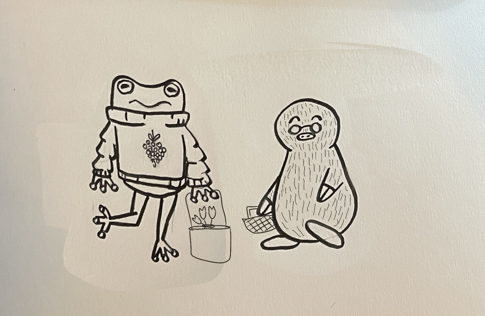

When Milo arrives back at his pastry shop, he decides to bake some cookies for Flora. He thought she was very kind and wanted to show that. Meanwhile, Flora decided to make a bouquet for Milo. She wanted to show her appreciation for him.

Flora and Milo then run into each other on their way to each other's shop. They each realize that they had the same idea to bring a gift to the other.
"You are really kind," Milo says. "I'd like to be friends with you." "I want to be friends with you too!" Flora says, smiling a froggy smile. The two exchange gifts, which was the start of a beautiful friendship.
 Citations.
Citations.